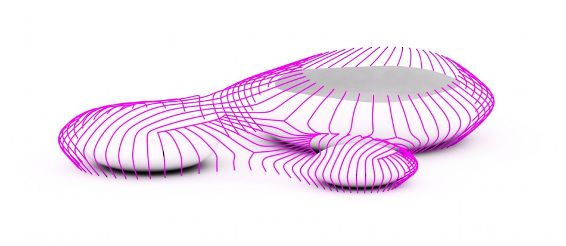
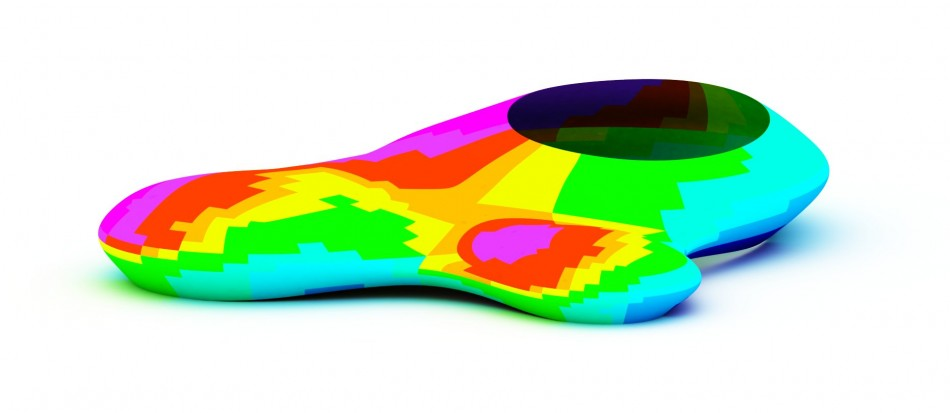

Data Driven Stadium Panels Part 2

The is an excerpt of a process I completed while working at the Yazdani Studio of Cannon Design R&D.
This post explores generative panel techniques for a stadium design concept. This body of work pertains mostly to the development of both curved and faceted panels influenced by weather/analysis data, the development of rationalized geometric configurations, the algorithmic documentation of this system and lastly to answer the question; if every point on a building is unique can a building’s performance and comfort can be optimized by tuning each panel on a faced to its unique position/orientation?
The design draws cultural influences from the middle east such as Arabic geometry and environmental influences such as thermal analysis data. The geometry is organized around three distinct yet connected volumes housing separate sporting functions bringing light to some potential methods used for skinning complex geometry.
One objective of this study is to further extend capabilities in creating generative surface components housing various forms of information and functionality resulting in a responsive building skin. A design’s initial geometry/surface is the host of a series of quadrants which ultimately house components, therefore the construction of a clean and organized surface typology is vital. The initial form for the stadium was created using subdivision modeling processes (diagram 8 & 9) due to the complexity and fluidity of the design concept. Rhino 3D is primarily a NURBS based application producing B-spline surfaces which are defined by a set of control points which lie topologically in a rectangular grid resulting in a large percentage of NURBS control points containing no significant geometric information. Subdivision mesh modeling minimizes control points while allowing for the refinement and or addition of new polygons, a process which simplifies the practice of creating advanced free form surfaces however, one drawback to sub division surfaces is that they are constructed as a series of piecewise linear polygon meshes. In other words it creates a faceted surface which is not always the best option for digital fabrication process which prefers true curves for tool paths and rapid prototyping. For this study the T-Splines plug-in was used to extend Rhino’s modeling capabilities allowing for the native creation of a sub-division model and the ability to move back and forth between NURBS and subdivision surfaces resulting in a free form NURBS surface with a clean typology that is easy to manage and control.
The following process takes place by way of a grasshopper script where all functionality is built into a single unified set of parametric relationships. After the geometry is converted from a polygonal surface to a NURBS surface it is sub-divided and re-organized to match the desired direction and orientation (figure 10), although this process takes place by way of a script it is somewhat manual in that the user must define what is up and what is down per each surface region, based on various factors such as structure and panel orientation (figure 11). Once the geometry is organized a series of rules generate a repetitive sub-structural grid connecting each quadrant (figure 12 & 16). Building envelope strategies vary greatly based on a multitude of factors such as Geo-location, scale, orientation, privacy, energy consumption, culture and function. The primary drivers for this particular case study are solar protection interlaced with traditional cultural Arabic influences. The development of a cladding system is developed to infill the sub structural members with shading devices to impede direct solar heat gain for the dry hot region and open air functions. The substructure is based on a 10 pointed star polygon constructed by a series of rules tied to the edges of each sub-divided surface (figure 16). The sub-divided quadrants are split by the sub-structure resulting in a series of surfaces acting as panels (figure 16). This standardize behavior is repeated to fill each quadrant with an array of standardized panels creating the enclosure. In an effort to create a responsive shading system tailored to its geographical location acting upon localized conditions, thermal data is used to inform the variation and location of panels further outlined below.
 PERFORMACE DATA
A typical process for conducting energy analysis is to manually move geometry from one program to another followed by a series of calculations subsequently influencing a design which often takes place through a series of generalizations based on graphical information. Generative 3d models contain rules and systems often constructed by mathematical formulas and lists of data which control the functionality, behavior and relationships taking place in a particular system. Due to the associative nature of generative models one can very quickly alter a large array of information by changing the underlying mathematical formulas or by feeding the formulas parameters. If a parametric system of components is sent to analysis software as an array of data matching the organization of the system, the analysis software subsequently can return the array of information which can be used to analytically influence or drive the design.
One of the advantages in using Rhino 3D is the simplicity of its SDK allowing for customization and extendibility. Currently one can directly access the SDK and namespace through the C# and VB.net scriptable components allowing for a simple and fairly straight forward connection to additional applications running simultaneously. [uto] has created a Plug-in/series of modules for grasshopper which aids in the link between Rhino3d and Ecotect analysis. The link allows for the automated exportation of 3d information to Ecotect environmental analysis followed by the return of the numerical results in a seamless loop. When the results are organized to match the generative logic they can be pared to inform relationships in different ways.
Incident solar radiation refers to the total amount of solar radiation falling on a surface. It does not take into consideration surface properties such as refractive effects or material properties however it does take into consideration the incidence angle relative to the surface normal of each analysis plane. For example; if the sun angle is perpendicular to a flat roof panel at 12:00 noon it imparts %100 of its energy to the surface, a 15deg shift in the angle of the sun will reduce the energy to 96% and an additional shift of the sun angle to 75deg will lower it to 26%. Incident solar radiation calculations are measured and expressed in Btu/ft2 units.
In this study peak total incident solar radiation was calculated on the form in a reasonably open rural setting during the hottest months of the year in Saudi Arabia. Analysis data was directly used to inform and drive which panels are removed within the stadium panel system resulting in a parametric relationship where the incident solar radiation (figure 17) directly informs the panel variation and location thus optimizing the performance and use of material. The subsequent procedure is to perform post analysis studies in order to measure the effectiveness of this data driven relationship.
POST ANALYSIS
The following post-analysis process is used to test the effectiveness of the data driven relationship/system. In this study we use an analysis surface underneath the panels to test the effectiveness of the panel’s ability to block the solar radiation. The process of running an analysis with so many components can be quite time consuming therefore any simplification that can be made to the components is well worth the time investment. Ecotect Analysis is currently a single threaded 32 bit application which is quite limiting in terms of harnessing a machines RAM and processing power. Due to the geometric complexity of the assembly a simplified shading system is scripted using a quadrant with a square opening matching the original assembly’s percentage (figure 18).
A significant question asked was whether or not a building’s performance and comfort can be optimized by tuning each panel on a faced to its unique position/orientation. The data produced in this study suggests that this is the case. A series of data visualizations were performed to help analyze and illustrate the effects of the shading system optimized per its local and orientation. The first analysis was done without a shading system in order to create a baseline or point of comparison. The next analysis was completed with a standard non-variant shading system applied uniformly to the geometry. The last analysis was completed the optimized data-driven system outlined above. The total cumulative incident solar radiation for the baseline system totaled 550,730 Btu/ft2 (Figure 19). The first shading system reduced the Btu/ft2 by 140,340 or 25.48% to 410,390 (Figure 20). The optimized system reduced the baseline by 231,070 or 41.95% (Figure 21) making the data driven system 22.11% more effective than the uniformly driven system.
RATIONALIZATION/FABRICATION/DOCUMENTAITON
The rationalization process begins at the data analysis stage when the information returns from the analysis tool. The script takes one large data set from Ecotect pared with its matching panels and parses the data set into 10 zones corresponding to their respective BTU numerical ranges resulting in a new gradation with less resolution (Figure 19). Each zone subsequently has a panel type and grouping of sub-panels which correspond to its location relative to the solar data. Each of the 10 zones uses a combination of 9 repetitive sub-panel components (Figure 19B). If the complexity of the system needs to be reduced or simplified at any point in the design process the number of zones and or sub-panels can be modified without the need to produce repetitive work. Once the parameters are established the script auto generates documentation component tags for each panel relative to its location and configuration (Figure 21). The tags are generated in Rhino and can be output in standard documentation formats such as DWG. A quick study was completed to isolate two separate panel zones based on the geometries mean curvature (Figure 22). In an effort to further rationalize and reduce cost the script uses one parameter as a threshold to separate the geometry into two groups base on their curvature; one for flat panels (Figure 22 grey) and one for curved(Figure 22 gold).
RATIONALIZATION/FABRICATION/DOCUMENTAITON
The rationalization process begins at the data analysis stage when the information returns from the analysis tool. The script takes one large data set from Ecotect pared with its matching panels and parses the data set into 10 zones corresponding to their respective BTU numerical ranges resulting in a new gradation with less resolution (Figure 19). Each zone subsequently has a panel type and grouping of sub-panels which correspond to its location relative to the solar data. Each of the 10 zones uses a combination of 9 repetitive sub-panel components (Figure 19B). If the complexity of the system needs to be reduced or simplified at any point in the design process the number of zones and or sub-panels can be modified without the need to produce repetitive work. Once the parameters are established the script auto generates documentation component tags for each panel relative to its location and configuration (Figure 21). The tags are generated in Rhino and can be output in standard documentation formats such as DWG. A quick study was completed to isolate two separate panel zones based on the geometries mean curvature (Figure 22). In an effort to further rationalize and reduce cost the script uses one parameter as a threshold to separate the geometry into two groups base on their curvature; one for flat panels (Figure 22 grey) and one for curved(Figure 22 gold).

For the purposes of this research rules outlined above act uniformly to each quadrant thus producing a standardized set of components. For each type to truly be repetitive requires the standardization of each geometric quadrant. Geometric rationalization is not part of this study but is directly related. Evolute in particular has developed a series of tools and body of information to aid in this process.